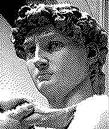
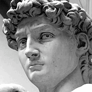

The original image from Wikimedia Commons.
The original image from Wikimedia Commons.
Roland van Ipenburg in association with Puurpxl epixness presents:
…because you can't expect a browser to scale dithered images without messing it up.
The original image from Wikimedia Commons.
Full-size image transformed into an HTML5 canvas containing the Atkinson dithered image.
 Pre-dithered image scaled by the browser to half-size looses the dithering effect.
Undithered image scaled by the browser to half-size before being transformed into an HTML5 canvas containing the Atkinson dithered image keeps the full dithering effect.
 Icon-sized square images all from the same square source image transformed into HTML5 canvasses with dithering.
JavaScript: (uses a bit of mootools)
var PuuAtkinsome = function() {
var CLASS_FILTER = new String("puu-atkinsome");
var EMPTY = new String('');
var DOT = new String('.');
var PX = new String('px');
var IMG = new String('img');
var ZERO = 0; //new Number(0);
var RADIX = 10; //new Number(10);
var GRAYS = 256;
var THRESHOLD = new Array();
for (var i = 0; i < GRAYS; i++) {
THRESHOLD.append(i < (GRAYS >> 1) ? [0] : [GRAYS - 1]);
}
self.grayscale = function(image) {
var i;
image.gray = new Array(image.width * image.height);
for (var i = 0; i < image.gray.length; i++) {
// Luminosity:
image.gray[i] = parseInt(
(0.21 * image.data[i << 2]) +
(0.71 * image.data[(i << 2) + 1]) +
(0.07 * image.data[(i << 2) + 2]), RADIX
);
}
}
self.spread = function(image) {
var p;
for (var i = 0; i < image.data.length; i += 4) {
p = image.gray[i >> 2];
image.data[i] = p;
image.data[i + 1] = p;
image.data[i + 2] = p;
// Skipping alpha channel.
}
}
self.turn_atkinson = function(el) {
if (el.nodeName.toLowerCase() == IMG) {
var width = el.getStyle('width').replace(PX, EMPTY);
var height = el.getStyle('height').replace(PX, EMPTY);
var canvas = new Element('canvas', {
'width' : width,
'height' : height
});
var ctx = canvas.getContext('2d');
// Opera 10.10 doesn't support the width and height parameters
if (/Opera/.test(navigator.userAgent)) {
ctx.drawImage(el, ZERO, ZERO);
}
else {
ctx.drawImage(el, ZERO, ZERO, width, height);
}
var data = ctx.getImageData(ZERO, ZERO, width, height);
self.grayscale(data);
for (var y = 0; y < data.height; y++) {
for (var x = 0; x < data.width; x++) {
var i = (y * data.width) + x;
gray_old = data.gray[i];
gray_new = THRESHOLD[gray_old];
gray_err = (gray_old - gray_new) >> 3;
data.gray[i] = gray_new;
var NEAR = [
[x+1, y], [x+2, y], [x-1, y+1], [x, y+1], [x+1, y+1], [x, y+2]
];
var near_x = 0;
var near_y = 0;
for (var n = 0; n < NEAR.length; n++) {
near_x = NEAR[n][0];
near_y = NEAR[n][1];
if (near_x >= 0) {
if (near_x <= width) {
if (near_y >= 0) {
if (near_y <= height) {
data.gray[
((near_y * data.width) + near_x)
] += gray_err;
}
}
}
}
}
}
}
self.spread(data);
ctx.putImageData(data, ZERO, ZERO);
canvas.replaces(el);
}
else {
el.getElements(IMG).each(function(item) {
self.turn_atkinson(item);
});
}
}
document.getElements(DOT.concat(CLASS_FILTER)).each(function(item) {
self.turn_atkinson(item);
});
};
window.onload = PuuAtkinsome;
{kind=link}